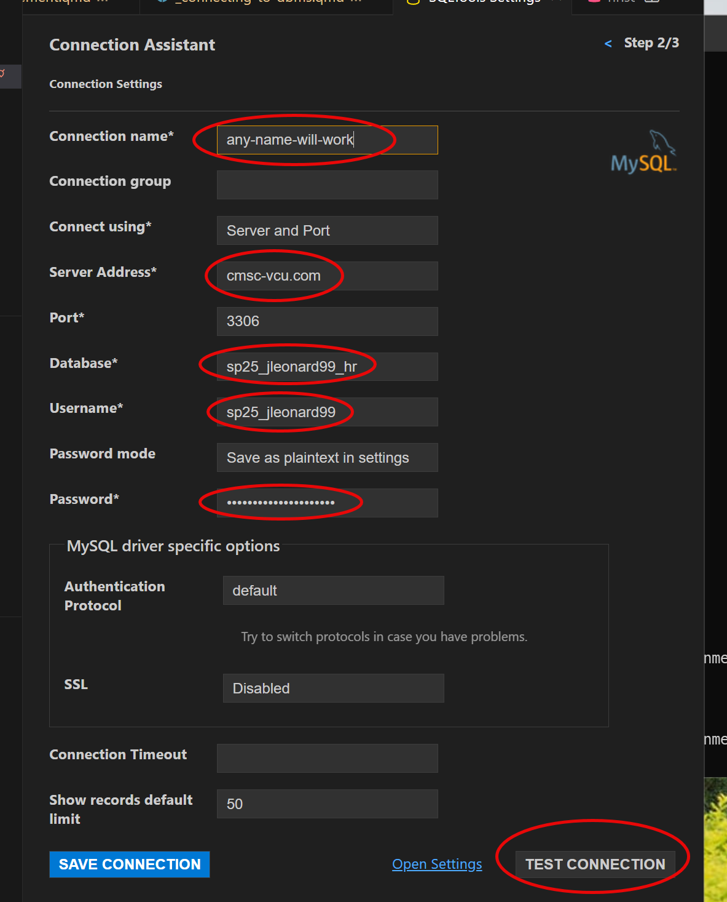
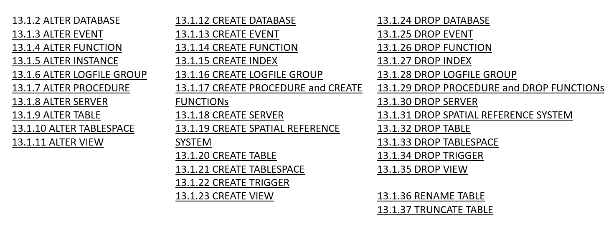
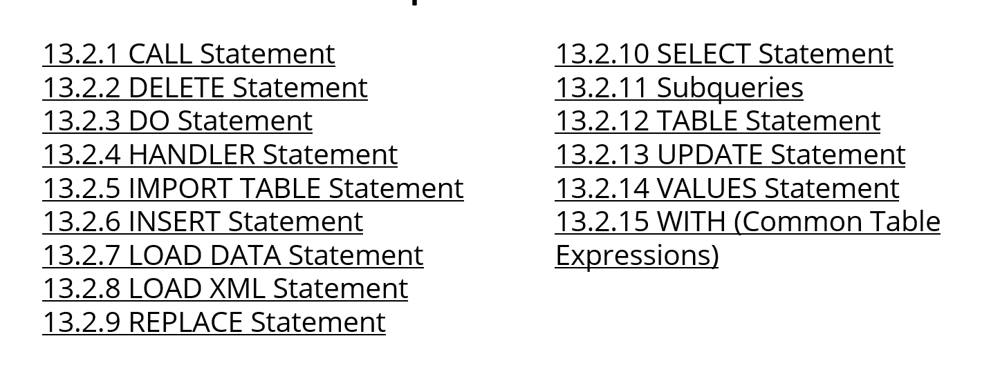

import os
import pandas as pd
from dotenv import load_dotenv
from sqlalchemy import create_engine,text
# load credentials from .env file
load_dotenv()
# store these credentials a dictionary for later reference
config = {
'user': os.getenv("HW5_USER"),
'password': os.getenv("HW5_PASSWORD"),
'host': os.getenv("HW5_HOST"),
'database': os.getenv("HW5_DB_NAME")
}
engine_uri = f"mysql+pymysql://{config['user']}:{config['password']}@{config['host']}/{config['database']}"
# create a database connection. THIS IS THE ACTUAL CONNECTION!
cnx = create_engine(engine_uri)Intro to SQL
Lecture 15
Thursday - Mar 6, 2025
Housekeeping
Discussion items
Quiz 3 - Analysis and Normal Forms - due 3/06, THU
Homework 4 - Analysis and Normal Forms - due 3/09, SUN
| Module | Week | Date | Day | Notes and Lectures | Activities and due dates |
|---|---|---|---|---|---|
| Normal forms | 8 | 3/6 | Thu | L15:Intro to SQL | Q3:Analysis and Normal Forms |
| Normal forms | 8 | 3/9 | Sun | HW4:Analysis and Normal Forms | |
| Spring Break | 9 | 3/11 | Tue | NO CLASS - Spring break (Mar.10-14) | |
| Spring Break | 9 | 3/13 | Thu | NO CLASS - Spring break (Mar.10-14) | |
| SQL I | 10 | 3/18 | Tue | L16:SQL Selects | PQ4:SQL Basics |
| SQL I | 10 | 3/20 | Thu | L17:SQL Toolset | |
| SQL I | 10 | 3/21 | Fri | Midterm grades due | |
| SQL I | 10 | 3/23 | Sun | HW5:Getting started with SQL; Dis4:SQL Basics |
Connecting to DBMS
Connecting to DBMS
Overview of the HW5 and beyond
- We’re using mysql DBMS.
- There are multiple ways to connect
- Lots of tools to install
Each approach is handy for one aspect of development. You need to use all the ways!
Ways to connect
- phpMyAdmin - via the web
- ssh - to a linux terminal
- vscode - using SQLTools extension
- python - using a connection
Connecting to DBMS
1. phpmyadmin
Visit this URL:
Username: sp25_(your eid)
- for example: sp25_jdleonard
Password: Shout4_(your eid)_joY
- for example, Shout4_jdleonard_joY
- Note capitalization!
This approach is most useful for managing the DBMS but NOT very useful for development.
2. connecting via SSH
We’ll explore this option when we discuss docker containers.
This approach is most useful for automating management of DBMS but NOT very useful for development.
Connecting to DBMS
3. Visual Studio Code
Install:
- SQLTOOLS extension
- SQLTOOLS mysql connector
You should see a DB icon on the left
See the connection screen!
This approach is most useful for directly building and coding SQL code. Lots of cutting and pasting commands through an DB window.

Connecting to DBMS
4. Python code
Clone your homework repository
Install pyenv, poetry, quarto
Install libraries - different ways
- Auto: using poetry
- Manually using pip
- matplotlib jupyter plotly
- python-dotenv sqlalchemy pymysql
Create a .env file
Create your python code
See helper.qmd for details!
This approach is most useful for developing the wrapper application around the SQL code.
Getting started with phpmyadmin
PhpMyAdmin - getting started
Learning Objectives
- Verify your login to DBMS
- Username format:
- sp25_(your EID)
- For example: sp25_jdleonard
- Password format
- Shout4_(your EID)_joY
- For example: Shout4_jdleonard_joY
- Explore the DBMS
- what can I access?
- what is inside?
Intro to SQL (repeat)
Interacting with the database
A DBMS is software that manages databases, providing an interface between users, applications, and the database. The DBMS handles the internal mechanics of data storage, querying, transaction management, and access control. When users or applications issue commands, the DBMS processes these commands and ensures that the database remains consistent, efficient, and secure.
Interacting with a Database Management System (DBMS) and a database involves several layers of operations, each designed to handle a specific aspect of how data is stored, managed, secured, and retrieved.
SQL (structured query language) is the computer language we use to interact with the DBMS.
SQL (Structured Query Language )
SQL (Structured Query Language): is a standardized language used for managing and querying relational databases. It provides commands for defining, manipulating, controlling, and retrieving data in databases.
ANSI SQL Standard: ANSI (American National Standards Institute) defines the core SQL standard, ensuring a common foundation for relational database operations across different systems, though specific features may vary by vendor. The most recent version of the SQL standard is SQL:2023, formally adopted in June 2023.
SQL Dialects by Vendor: While adhering to ANSI SQL, many database vendors (like MySQL, PostgreSQL, Oracle, SQL Server) extend SQL with proprietary features (e.g., Oracle’s PL/SQL, Microsoft’s T-SQL) to support additional functionalities unique to their systems.
SQL command groups
SQL commands are grouped based on what they do to/for the DBMS. We sometimes refer to these groups as separate languages: DDL, DML, DCL, and TCL.
Design and Structure (DDL): When building a database, DDL is the first interaction, defining how data will be stored and structured. This foundational step ensures the database can efficiently support future operations.
Manipulating and Retrieving Data (DML): The core daily interactions with the database happen through DML. Whether adding new entries, retrieving data, or updating records, these operations are what end-users experience.
Security and Permissions (DCL): Modern databases are often accessed by multiple users and applications. Ensuring that data access is controlled and secure is essential, and DCL ensures that only the right users have the appropriate access levels.
Maintaining Data Integrity (TCL): In multi-user environments or where transactions involve complex steps (e.g., financial transactions, inventory updates), TCL ensures that the database remains in a consistent state even when failures or conflicts occur.
DDL (Data Definition Language)
- Purpose: Defines the structure and organization of the database.
- Role: DDL commands interact directly with the DBMS to create, modify, or delete database objects such as tables, indexes, and schemas.
- Example: When creating a new table, the DBMS allocates the necessary storage and manages the metadata that defines the table structure. DDL commands ensure that the database schema evolves as the application grows.
- Use Cases:
- Creating a new table to store user data.
- Altering the structure of an existing table to accommodate new fields.
DDL (Data Definition Language)
Key DDL commands include:
CREATE: Used to create new database objects like tables, indexes, views, or databases.ALTER: Used to modify the structure of an existing database object (e.g., adding or removing columns in a table).DROP: Used to delete database objects like tables, indexes, or entire databases.TRUNCATE: Removes all records from a table, but keeps the table structure intact.RENAME: Used to rename database objects.
DDL commands define and change the structure or schema of a database, unlike DML, which focuses on manipulating the data within those structures.
DDL (Data Definition Language)
- DDL compiler generates a set of tables stored in a data dictionary
- Data dictionary contains metadata about:
- Database tables, fields and data types
- Primary and foreign keys
- Data integrity constrants
- Referential integrity
- Access and authorization rules
DML (Data Manipulation Language)
- Purpose: Manages the actual data within the database.
- Role: DML commands interact with the DB to insert, retrieve, update, and delete data. The DBMS processes these requests and ensures the data is accessed efficiently and accurately.
- Example: When querying data (e.g.,
SELECT), the DBMS retrieves the requested information from the database, handles the query optimizations, and returns results to the user or application. - Use Cases:
- Retrieving customer data for an e-commerce application.
- Inserting new product information into a database.
DCL (Data Control Language)
- Purpose: Controls access to the data within the database.
- Role: DCL commands interact with the DBMS to manage user permissions and security. This ensures that only authorized users can access or modify specific parts of the database.
- Example: Granting access to a developer to only read the data while restricting their ability to modify or delete it.
- Use Cases:
- Granting access to specific tables for an application.
- Revoking permissions from users who should no longer access the database.
TCL (Transaction Control Language)
- Purpose: Manages and controls database transactions.
- Role: TCL commands work closely with the DBMS to ensure that changes made to the database maintain ACID (Atomicity, Consistency, Isolation, Durability) properties. This ensures that transactions are processed reliably.
- Example: When performing a
COMMITafter multipleINSERToperations, the DBMS makes the changes permanent. If any part of the transaction fails, aROLLBACKcan undo all the changes to ensure data integrity. - Use Cases:
- Performing multiple updates to an inventory system and committing them only when all changes are successfully made.
- Rolling back a transaction if a bank transfer fails midway, ensuring no partial changes occur.
SQL Summary
SQL is the overarching language for interacting with the relational database management system.
SQL commands are organized into languages that play a distinct roles in the overall functioning of the DBMS. Together, they allow the applications programmer to:
- Define the structure (DDL),
- Manipulate the data (DML),
- Secure the database (DCL), and
- Ensure reliable transactions (TCL).
By interacting with these layers, the DBMS provides a seamless, powerful way to manage data efficiently, ensuring that applications can scale, users can access information securely, and data integrity is maintained across transactions.
mySql DBMS (repeat)
MYSQL DBMS
Leveraging the power
What not simply use 2-D arrays or other data structures in our programs? Why use a data base at all?
The DBMS will DO LOTS OF WORK for us AUTOMATICALLY. We simply need to know how to tell it what we want it to do.
We can provide these management and operating rules when tables are created.
The DBMS will enforce the rules in real-time behind the scenes.
The DBMS maintains several databases specifically for the management of the database itself!
- information_schema
- performance_schema

MySQL DBMS


MYSQL Documentation

Two types of statements:
- Data Definition Statement (DDL)
- Data Manipulation Statements (DML)
DDL - Data Definition Language

DML - Data Manipulation Language

Housekeeping
Discussion items
Quiz 3 - Analysis and Normal Forms - due 3/06, THU
Homework 4 - Analysis and Normal Forms - due 3/09, SUN
| Module | Week | Date | Day | Notes and Lectures | Activities and due dates |
|---|---|---|---|---|---|
| Normal forms | 8 | 3/6 | Thu | L15:Intro to SQL | Q3:Analysis and Normal Forms |
| Normal forms | 8 | 3/9 | Sun | HW4:Analysis and Normal Forms | |
| Spring Break | 9 | 3/11 | Tue | NO CLASS - Spring break (Mar.10-14) | |
| Spring Break | 9 | 3/13 | Thu | NO CLASS - Spring break (Mar.10-14) | |
| SQL I | 10 | 3/18 | Tue | L16:SQL Selects | PQ4:SQL Basics |
| SQL I | 10 | 3/20 | Thu | L17:SQL Toolset | |
| SQL I | 10 | 3/21 | Fri | Midterm grades due | |
| SQL I | 10 | 3/23 | Sun | HW5:Getting started with SQL; Dis4:SQL Basics |
CMSC 408 - Databases